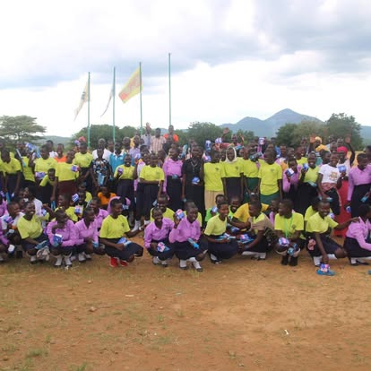
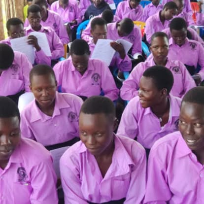
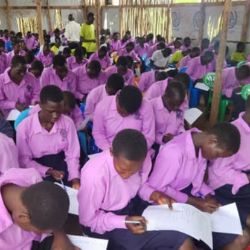
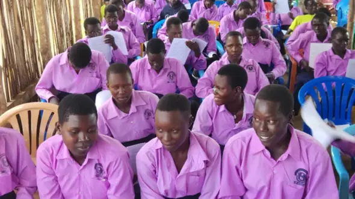
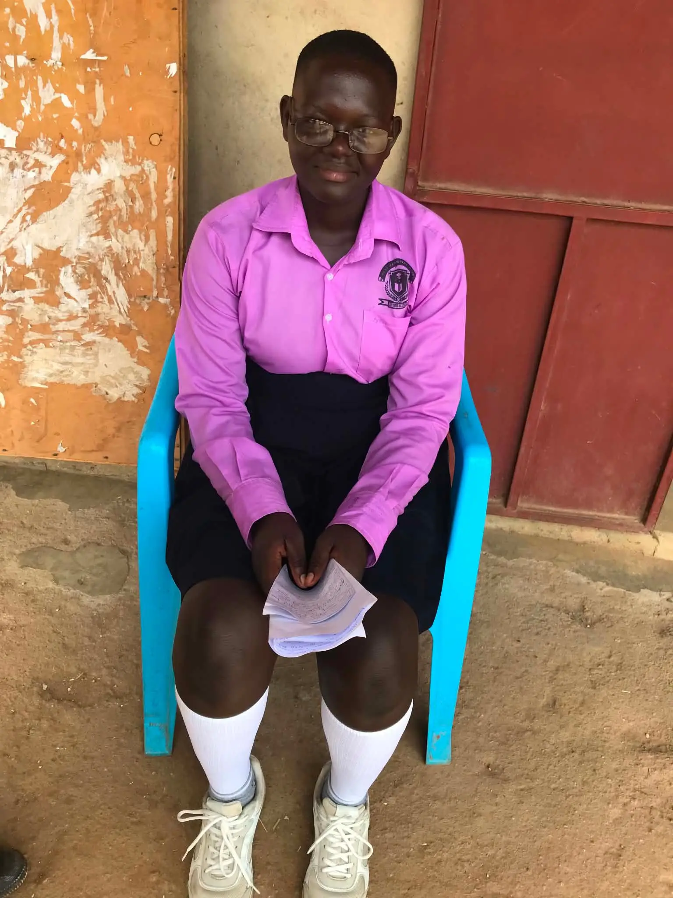
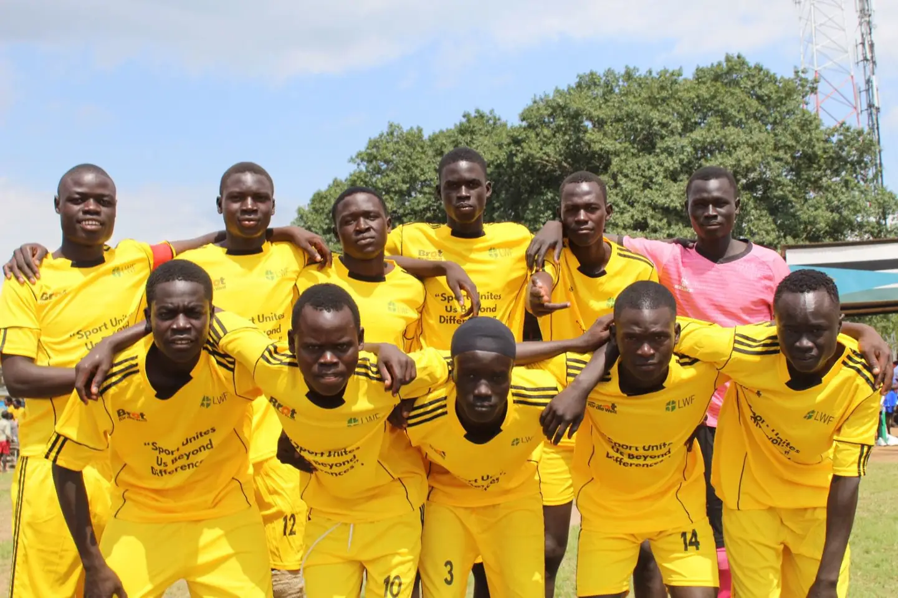

Named for a mother. Built by a son's sacrifice. Serving 200+ students in Magwi Center, Eastern Equatoria, South Sudan.
Ayaa Senior Secondary School did not come from a grant. It did not come from a corporate CSR budget or a government program. It came from one man — Simon Ottaviano — who sold his Louisville home and cashed out his 401(k) retirement savings because he believed the children of Magwi deserved a future.
He named the school Ayaa — after his mother. In Acholi tradition, honoring one's mother is among the most profound expressions of love and gratitude. Every child who sits in those classrooms sits under the protection of her name.
The school opened in 2022 in Magwi Center, the administrative hub of Magwi County, Eastern Equatoria — the territory of the Acholi people in South Sudan. From its first day, it served students from Senior One through Senior Four, offering the complete secondary education curriculum aligned to national standards.
Today, more than 200 students are enrolled — young men and women from Magwi and surrounding villages who, without this school, would have no secondary education option within reach.

For many students, Ayaa Senior Secondary School is the first real opportunity their family has ever had.
Ayaa Senior Secondary School offers four complete years of secondary education — Senior One through Senior Four — aligned to South Sudan's national curriculum. Students study mathematics, science, English, social studies, and more.
Students come from Magwi Center and surrounding villages — some walking significant distances each day. The school serves Acholi, Madi, and other communities of Eastern Equatoria, reflecting the rich diversity of the region.
A secondary education is the gateway to university, vocational training, and professional careers. Ayaa's graduates will be the doctors, teachers, engineers, and leaders that South Sudan desperately needs to rebuild.



"Every morning, before the sun is fully up, our girls begin walking. Four miles. Five miles. Through bush, along roads that are not safe. They arrive at school having already survived something before the day begins."
Here is the reality for female students at Ayaa Senior Secondary School: many live 4 to 5 miles away, with no transportation, no dormitory, and no safe overnight option. Each school day requires a round trip of up to 10 miles on foot — often in the dark, often alone, always exposed.
The consequences are not abstract. Girls are harassed. Girls are assaulted. Girls drop out — not because they lack ability or ambition, but because the journey itself becomes too dangerous. Families pull their daughters from school to protect them. In doing so, they sacrifice their daughters' futures to keep them safe today.
This is the problem that a Girls' Dormitory solves.
With on-site housing, female students from distant villages can live at school safely — supervised, fed, protected. They arrive at class rested, not exhausted from a predawn march. They study in the evenings. They graduate. They go to university. They become the women who rebuild South Sudan.


A school is only as strong as the health of its students. For the people of Magwi, clean water has historically been a serious challenge. The River Ayii — the community's traditional water source — carries bilharzia (schistosomiasis), a parasitic disease that causes chronic illness, particularly in children.
AYAA's partnership with WaterStep — a Louisville-based water nonprofit — is bringing a sustainable water purification system to the school and village. This means students can drink safely. Teachers stay healthy. Families thrive.
The connection between Louisville and Magwi, between WaterStep and AYAA, is proof of what's possible when diaspora communities organize and lead. Simon Ottaviano built the bridge; the water flows both ways.
Learn More About the Water ProgramEvery dollar goes directly to school operations, the girls' dormitory, and student support. AYAA is a 501(c)(3) — your gift is fully tax-deductible.
Give online →Many employers double or triple employee charitable donations. Check your HR portal or ask your employer about matching gifts for 501(c)(3) organizations. Double your impact at no extra cost.
Learn about matching →Share the story of Ayaa Senior Secondary School with your networks. Every person who learns about Simon's sacrifice and the children of Magwi is a potential ally, donor, or volunteer.
Get in touch →